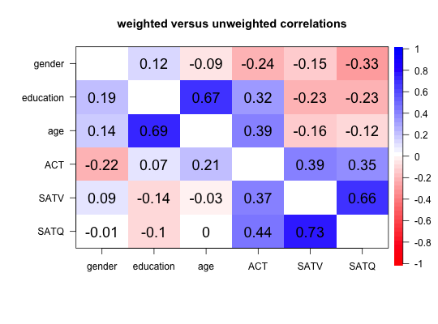
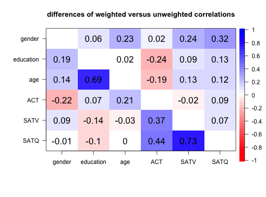

If using aggregated data, the correlation of the means does not reflect the sample size used for each mean. cov.wt in RCore does this and returns a covariance matrix or the correlation matrix. The cor.wt function weights by sample size or by standard errors and by default return correlations.
cor.wt(data,vars=NULL, w=NULL,sds=NULL, cor=TRUE)
| data | A matrix or data frame |
|---|---|
| vars | Variables to analyze |
| w | A set of weights (e.g., the sample sizes) |
| sds | Standard deviations of the samples (used if weighting by standard errors) |
| cor | Report correlations (the default) or covariances |
A weighted correlation is just \( r_{ij} = \frac{\sum(wt_{k} (x_{ik} - x_{jk})}{\sqrt{wt_{ik} \sum(x_{ik}^2) wt_jk \sum(x_{jk}^2)}} \) where \(x_{ik}\) is a deviation from the weighted mean.
The weighted correlation is appropriate for correlating aggregated data, where individual data points might reflect the means of a number of observations. In this case, each point is weighted by its sample size (or alternatively, by the standard error). If the weights are all equal, the correlation is just a normal Pearson correlation.
Used when finding correlations of group means found using statsBy.
The weighted correlation
The data as weighted deviations from the weighted mean
The weights used (calculated from the sample sizes).
The weighted means
Unweighted, centered deviation scores from the weighted mean
Deviation scores weighted by the standard error of each sample mean
A generalization of cov.wt in core R
See Also as cov.wt, statsBy
means.by.age <- statsBy(sat.act,"age") wt.cors <- cor.wt(means.by.age) lowerMat(wt.cors$r) #show the weighted correlations#> gendr edctn age ACT SATV SATQ #> gender 1.00 #> education 0.12 1.00 #> age -0.09 0.67 1.00 #> ACT -0.24 0.32 0.39 1.00 #> SATV -0.15 -0.23 -0.16 0.39 1.00 #> SATQ -0.33 -0.23 -0.12 0.35 0.66 1.00#> gendr edctn age ACT SATV SATQ #> gender 1.00 #> education 0.19 1.00 #> age 0.14 0.69 1.00 #> ACT -0.22 0.07 0.21 1.00 #> SATV 0.09 -0.14 -0.03 0.37 1.00 #> SATQ -0.01 -0.10 0.00 0.44 0.73 1.00mixed <- lowerUpper(unwt,wt.cors$r) #combine both results cor.plot(mixed,TRUE,main="weighted versus unweighted correlations")diff <- lowerUpper(unwt,wt.cors$r,TRUE) cor.plot(diff,TRUE,main="differences of weighted versus unweighted correlations")